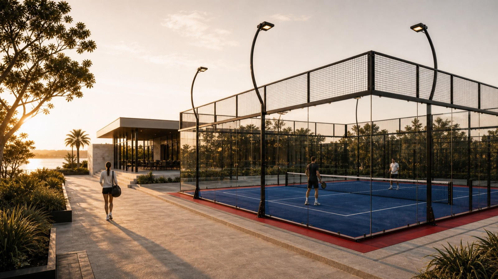

01
Weather
Rain, wind and winter evenings cut usable hours from courts that communities already own.
Nine One designs year-round community sport infrastructure — so weather, land and daylight stop deciding when a community can play.

Rain, wind and winter evenings cut usable hours from courts that communities already own.
New land for sport is scarce and slow — the space that exists has to work harder.
Traditional indoor builds are expensive and slow, so most projects never start.
Courts, surfaces and sport products — the spaces people play in.
Booking, access and operations — the layer that keeps a facility running.
Covered, site-specific infrastructure — designed around the land you already have.
Land, weather, access and the community around it.
Which games, which formats, and the hours they need.
Space, cover, lighting and operations planned together.
A clear brief for engineering, consent and delivery.
Tell us about the land, the community and the sport. We'll come back with the next step.
Plan a facility